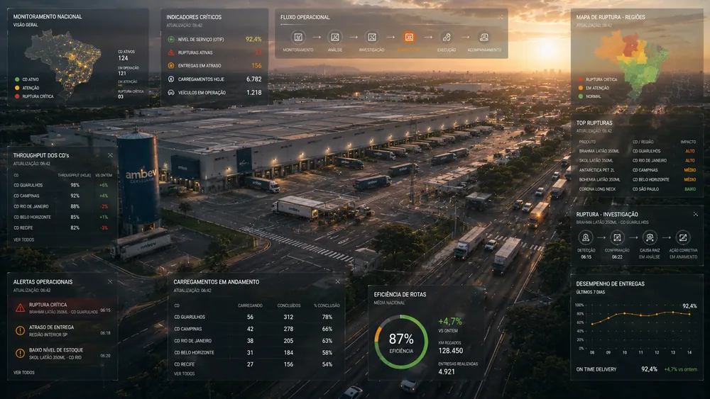

Ambev Monitoring
Ambev
Plataforma de monitoramento operacional logístico em escala nacional, transformando relatórios desconectados em uma leitura compartilhada e integrada do estado da operação. National-scale logistics operational monitoring platform, transforming disconnected reports into a shared, integrated reading of the operation's state.
Uma leitura comum
da operação nacional.
A common reading
of national operations.
A plataforma organizou rupturas, carregamentos e indicadores de disponibilidade em torno do estado da operação como unidade central de leitura. The platform organized stockouts, shipments, and availability indicators around the operational state as the primary unit of reading.
A distribuição nacional envolve múltiplos centros de decisão simultâneos. National distribution involves multiple simultaneous decision centers.
Quatro perfis de leitura operacional coexistiam na mesma operação: centros de distribuição, equipes logísticas, times regionais e gestores de operação. Four operational reading profiles coexisted: distribution centers, logistics teams, regional teams, and operations managers.
Cada um desses perfis operava de forma isolada. Quando surgia uma ruptura ou atraso relevante na entrega, entender o impacto real exigia cruzar informações manualmente — entre relatórios físicos, sistemas internos e planilhas regionais. O centro de controle precisava responder rapidamente três perguntas: onde está o problema, qual região foi afetada e o que precisa ser priorizado no momento.
Each profile operated in isolation. When a stockout or delivery delay occurred, understanding the real impact required manually crossing information — between reports, internal systems, and regional spreadsheets. The control center needed quick answers: where the problem is, which region is affected, and what needs immediate prioritization.
- Centros de Distribuição (Estoques)Distribution Centers (Stocks)
- Equipes Logísticas (Carregamento)Logistics Teams (Loadings)
- Times Regionais (Nível de Serviço)Regional Teams (Service Level)
- Gestores (Desempenho Agregado)Managers (Aggregated Performance)
Antes do sistema, a operação existia, mas a leitura da operação não. Before the system, the operation existed, but its reading did not.
Indicadores críticos de rupturas e frotas estavam distribuídos em planilhas locais e relatórios offline de faturamento. Critical stockout and fleet indicators were distributed across local spreadsheets and offline billing reports.
Esta fragmentação criava múltiplas versões da realidade logística acontecendo simultaneamente. Sem uma visualização consolidada da distribuição nacional, o tempo de resposta era alto, pois as equipes precisavam gastar tempo montando manualmente o cenário antes de agir e tomar decisões.
This fragmentation created multiple parallel versions of the logistics reality. Without a consolidated visualization of national distribution, response times were high as teams had to spend time manually building the scenario before taking action.
- Planilhas regionais isoladasIsolated regional spreadsheets
- Relatórios periódicos em papel/PDFPeriodic paper/PDF reports
- Histórico de frotas assíncronoAsynchronous fleet history
- Ausência de alarmes estruturadosLack of structured alarms
O problema não era a ausência de dados, mas a ausência de estrutura. The problem was not lack of data, but lack of structure.
Com dados abundantes mas sem conexão, o monitoramento contínuo e a análise de causa raiz de rupturas estavam misturados na mesma tela, inflando o effort cognitivo. With abundant but unconnected data, continuous monitoring and stockout root-cause analysis were mixed on the same screen, inflating cognitive effort.
A equipe gastava mais tempo descobrindo onde estava o problema do que agindo nele. Centros de distribuição e times comerciais trabalhavam com leituras dessincronizadas, o que gerava rupturas desnecessárias de estoque no ponto de venda e atrasos na liberação de carregamentos críticos.
The team spent more time figuring out where the problem was than fixing it. Distribution centers and commercial teams worked with out-of-sync readings, generating unnecessary stockouts at the point of sale and delays in critical shipment releases.
Estruturação da arquitetura de informação e fluxos de decisão. Information architecture structuring and decision flows.
Trabalhei como UX Designer na estruturação da arquitetura e fluxos de decisão da plataforma. Colaborei de perto com Andrea Parente (UX Research) no mapeamento de requisitos e na dinâmica com especialistas logísticos, e com a equipe de UI (Michelle Santos e Afonso Lopez) para materializar a interface. I worked as UX Designer structuring the platform's information architecture and decision flows. I collaborated closely with Andrea Parente (UX Research) in mapping requirements and hosting workshops with logistics specialists, and with the UI team (Michelle Santos and Afonso Lopez) to shape the interface.
Arquitetura de 3 camadas.3-layer architecture.
Propus estruturar o sistema em três níveis progressivos: nacional, regional e de detalhes do evento.Proposed structuring the system into three progressive levels: national, regional, and event details.
Monitoramento separado da investigação.Monitoring separated from investigation.
Dividi a interface em modo de visualização rápida da operação e módulo investigativo de causa raiz.Divided the interface into a quick operational view mode and a root-cause investigative module.
Hierarquia de sinais críticos.Hierarchy of critical signals.
Posicionei rupturas e carregamentos em andamento com prioridade visual absoluta sobre dados históricos.Positioned ongoing stockouts and shipments with absolute visual priority over historical data.
Consistência entre escalas.Consistency across scales.
Padronizei os componentes e gráficos para que a leitura nacional e a regional usassem o mesmo modelo visual.Standardized components and charts so that national and regional readings used the same visual model.
Mapeamento geográfico interativo.Interactive geographic mapping.
Desenhei a integração do mapa nacional com os indicadores agregados por estado e centro de distribuição.Designed national map integration with aggregated indicators by state and distribution center.
Foco em Control Room.Control Room focus.
Ajustei o design e contraste para funcionar perfeitamente em múltiplos monitores e telões compartilhados.Adjusted design and contrast to work perfectly on multiple monitors and shared wallboards.
Escala de dados, frequências de atualização e cenários de uso. Data scale, update frequencies, and usage scenarios.
- Atualização contínua: O fluxo de dados exigia processamento constante para garantir leitura em tempo real sem latência. Continuous updates: The data flow required constant processing to ensure real-time reading without latency.
- Múltiplos perfis de leitura: A plataforma precisava atender diretores corporativos e técnicos operacionais no mesmo sistema. Multiple reading profiles: The platform had to serve corporate directors and operational techs within the same system.
- Uso coletivo (Telão): O design precisava ser visível e compreensível a distância nos centros de controle físico (Control Tower). Collective use (Wallboard): The design had to be readable and understandable from a distance in physical control centers.
- Integração legada: Coexistência e sincronia com sistemas de frotas e ERPs clássicos de distribuição sem quebras operacionais. Legacy integration: Coexistence and synchrony with fleet systems and classic distribution ERPs without operational breaks.
O estado da operação como objeto central do sistema. The operation's state as the central system object.
A decisão central foi unificar todos os indicadores de carregamento, rupturas and disponibilidade em torno do estado atual da distribuição, organizados em três camadas conectadas. The central decision was to unify all loading, stockout, and availability indicators around the current distribution state, organized into three connected layers.
Telas e walkthrough de monitoramento de frotas e rupturas. Screens and walkthrough of fleet and stockout monitoring.
Abaixo, a sequência de interfaces que estruturam o monitoramento nacional da distribuição e o controle de desvios operacionais. Below, the sequence of interfaces structuring the national monitoring of distribution and control of operational deviations.

Monitoramento Geográfico Nacional National Geographic Monitoring
Mapa geográfico interativo integrado com os status operacionais por região, permitindo detectar desvios e atrasos de carregamento em tempo real nos centros de controle.
Interactive geographic map integrated with operational statuses by region, allowing real-time detection of load delays and deviations in control centers.


Painéis de controle de carregamentos em andamento (à esquerda) e a tela de detalhe regional de frota e rotas (à direita) para acompanhamento pontual.
Control dashboards for ongoing loadings (left) and the regional fleet and route details screen (right) for specific tracking.

Acompanhamento de Estoques e Nível de Serviço Inventory and Service Level Tracking
Interface de monitoramento de disponibilidade física de produtos e checagem de corte de pedidos nos centros de distribuição regional.
Inventory availability monitoring interface and order cuts check across regional distribution centers.


Módulo de exceções com priorização de carregamentos críticos (à esquerda) e detalhe de análise temporal de faturamento e produtividade logísitca (à direita).
Exceptions module with prioritization of critical shipments (left) and timeline analysis of billing and logistics productivity (right).

Análise de Causa Raiz de Rupturas Stockout Root Cause Analysis
Tela detalhada para investigação e diagnóstico de rupturas de estoque, cruzando volumes demandados e em trânsito com janelas de transporte de frotas.
Detailed screen for stockout investigation and diagnosis, crossing demanded and in-transit volumes with fleet transportation windows.
Latência de dados legados e fronteiras do sistema. Legacy data latency and system boundaries.
Alguns sistemas legados de rastreamento de frotas apresentavam atualizações assíncronas que impediam tempo de resposta imediato. Some legacy fleet tracking systems had asynchronous updates that prevented immediate response times.
A latência na transmissão de dados de satélite de frotas terceirizadas exigia que o sistema mantivesse uma sinalização visual de "idade do dado" para evitar decisões baseadas em posições antigas de caminhões. O despacho final de motoristas e a reprogramação de rotas continuaram sob a responsabilidade de ERPs externos específicos.
Latency in satellite data transmission from third-party fleets required the system to maintain a visual "data age" indicator to prevent decisions based on stale truck positions. Final driver dispatch and route rescheduling remained under the responsibility of specific external ERPs.
Impacto da unificação da leitura logística nacional. Impact of national logistics reading unification.
A centralização dos dados no Ambev Monitoring sincronizou a operação entre o centro de distribuição e o time de vendas. The data centralization on Ambev Monitoring synchronized the operation between distribution centers and the sales team.
De duração do projeto — ciclo completo de UX, IA e testes em campo. Of project duration — complete cycle of UX, IA, and field tests.
Unificada compartilhada por centros de distribuição e gestores logísticos nacionais. Unified view shared by distribution centers and national logistics managers.
Rastreabilidade dos alertas operacionais de carregamentos a desvios de frotas. Traceability of operational alerts from loadings to fleet deviations.
De usuários integrados na mesma interface de leitura de exceções. User profiles integrated into the same exceptions reading interface.
Projetar para a escala nacional exige clareza e hierarquia de sinal. Designing for national scale requires clarity and signal hierarchy.
O maior aprendizado foi ver que, em operações de alta velocidade, a hierarquia de sinal é tudo. Um dashboard logístico poluído ou que misture monitoramento com diagnóstico manual gera inércia e atraso. O design deve guiar o olhar do operador para a exceção que precisa de ação imediata. The biggest learning was seeing that, in high-velocity operations, signal hierarchy is everything. A cluttered logistics dashboard that mixes monitoring with manual diagnosis causes inertia and delay. Design must guide the operator's eye directly to the exception requiring immediate action.